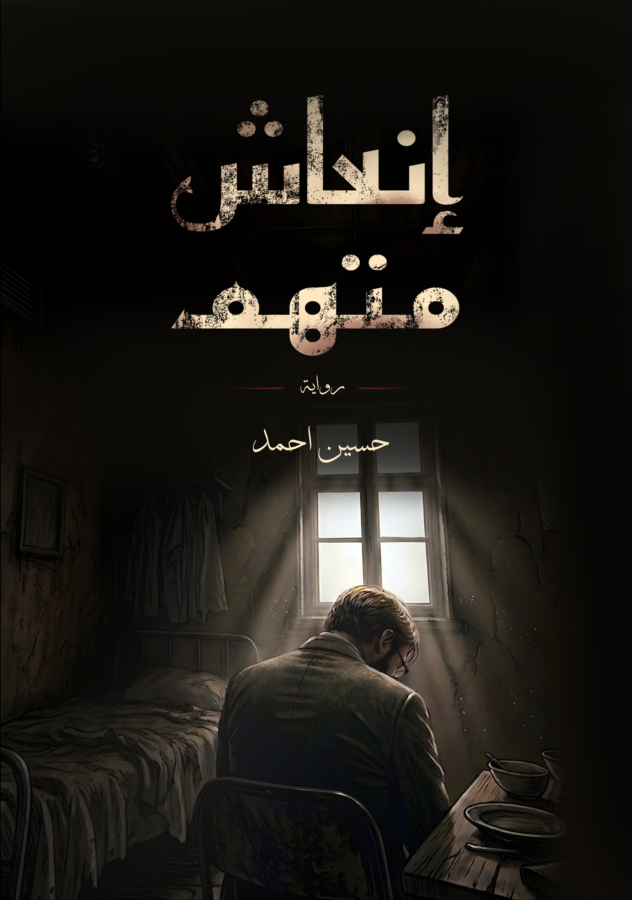

حُسَيْن أَحْمَد
كاتب عراقي ناشئ وطالب جامعي في قسم التمريض من بغداد.
شخصياً، اهوى اعمال الفنية القصصية ذات طابع سينمائي وملحمي مثير، حاليا اقوم بتأليف أعمال قصصية روائية واهتم بتطوير أسلوب سردي تقديم وتنسيق لون معاصر وجاد بالطرح.
عقب رحيل شخصية سياسية ثقيلة إثر جراحة ناجحة، تتحول أروقة الشفاء إلى مسرح لتصفية الحسابات بين تقارير تحذف وشائعات تصنع للإعلام وتهم أعدت مسبقاً. يجد جراح بين جدران الخداع ويواجه عقوبة الإعدام لجريمة دولية.
نبذة عن الرواية

كاتب عراقي ناشئ وطالب جامعي في قسم التمريض من بغداد.
شخصياً، اهوى اعمال الفنية القصصية ذات طابع سينمائي وملحمي مثير، حاليا اقوم بتأليف أعمال قصصية روائية واهتم بتطوير أسلوب سردي تقديم وتنسيق لون معاصر وجاد بالطرح.